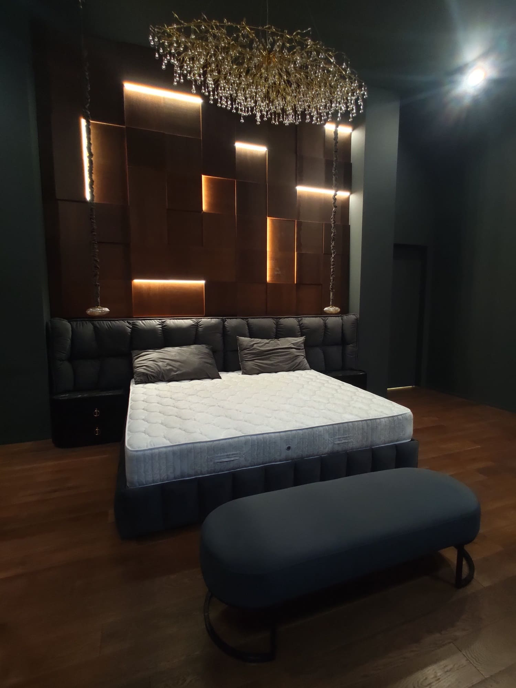

ДИЗАЙНЕРСКАЯ МЕБЕЛЬ НА ЗАКАЗМебель под интерьер.
Мебель под интерьер.
Под ваш характер.
Кровати, диваны и кресла по индивидуальному заказу. Выберите модель, материал, цвет и подходящие размеры.
Выбрать мою мебель
МОДЕЛИ ИЗ КАТАЛОГАОт общего вида
От общего вида
до мягких деталей.
Форма изголовья, обивка, размер и дополнительные возможности. Можно выбрать готовый дизайн и адаптировать модель под ваше пространство.
Обсудить мою мебель